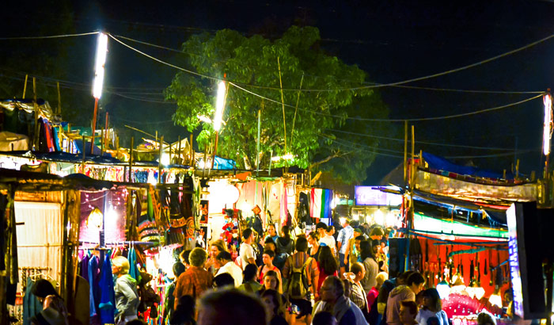

~ Places to Visit in Goa ~
Popular things to do

Plantation Tour
Top Attractions Goa
Mangeshi Temple
The main temple is dedicated to Bhagavan Manguesh,
an incarnation of Shiva. Bhagavan Mangesh is worshipped
here as Shiva linga. According to the legend, Shiva
had manifested into a tiger to scare his wife Parvati.
Fontainhas
Some of the must visit spots in Fontainhas are St Sebastian
Chapel, Afonso Guest House, Velha Goa Galleria (for hand painted
azulejo tiles and ceramics), Peacock Steps, Joseph's Bar, Maruti
Temple atop Altinho Hill. Some of the famous places to eat in
Fontainhas are Viva Panjim and Verandah Panjim Inn.
Reis Magos Fort
Reis Magos is a village located on the northern bank of the
Mandovi River in Bardez, Goa, opposite to the capital city of
Panjim. The village is famous for two of Goa's famous structures;
the Reis Magos Fort, and the Reis Magos Church – the first church
in Bardez.
Church of Our Lady Of Hope
The church is home to the famous statue of Ecce
Homo, meaning 'Behold the man' a statue of our
lord in chains and is kept for public veneration
on the fourth Sunday of lent every year.
St. Alex Church
The St.Alex Church is one of the oldest churches in
Goa which was originally built in 1597 by St. Francis.
The church is dedicated to St. Alex, who was a soldier
in the Roman army and was martyred for his faith.

The Saturday Night Market
This sprawling market is located in Arpora every Saturday
evening during the tourist season. One can find everything
in this market – right from spices to jewellery, unique
creastion, international designers, vintage items and much more.
Apart from that, it hosts live concerts. The market’s setup is
simply amazing with three layers.
Calangute Beach
The Calangute Beach is one of the flagship beaches of Goa and is
also famous for the various water sports and activities it hosts.
Attracting tourists from all parts, the water sports and activities
offered at the Calangute Beach include parasailing, water surfing,
banana ride and many more.
Baga Beach
Baga Beach is quite famous for its commercial nightlife. The famous
Tito's Lane has many bars, lounges, and clubs like Club Tito, Cafe
Mambo, Capetown Cafe, Cocktails and Dreams, and Cavala that contribute
to keeping the nightlife in Baga Beach, one of the best in Goa.

Candolim Beach
Nonetheless the Candolim Beach is also famous for hosting
India's biggest electronic music dance festival, the Sunburn
Festival, which is organized by Percept, an Entertainment,
Media and Communications conglomerate.
Church of Our Lady of the Immaculate Conception
This church houses the ancient bell that was removed from
the Augustinian ruins of the Church of Our Lady of Grace
(Portuguese: Nossa Senhora da Graça) in the once famed
city of Old Goa.
Chapora Beach
Chapora Beach is located on the northern side of the Vagator,
which is at the distance of 10 km from Mapusa. It's one of
the best beaches of Goa that touches a chord in the heart
of tourists with its white sandy unfold, black lava rocks,
sapphire expanse, and shaking palms. It's the favourite
spot for the one, who love the surf and the sand.
Butterfly Beach
As the name suggests, Butterfly beach is the abode of numerous
beautiful butterflies. But what the name doesn't tell us is that
during low tides, when the seashore widens, the beach is littered
with crabs and goldfishes. Sea urchins, sea cucumbers, and even
redfish are common sights here.